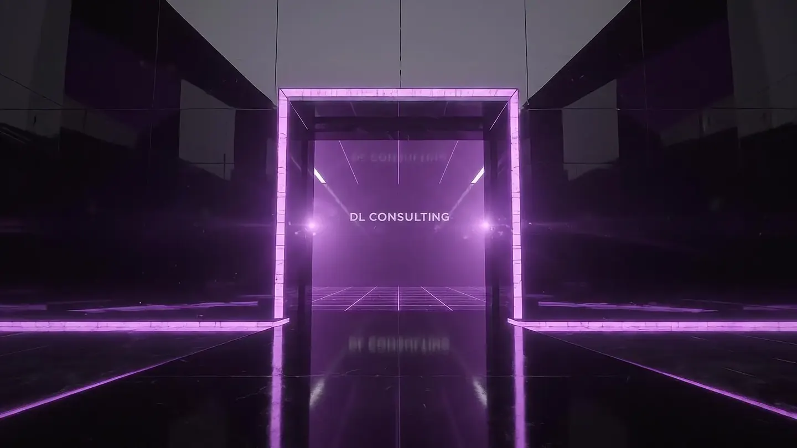
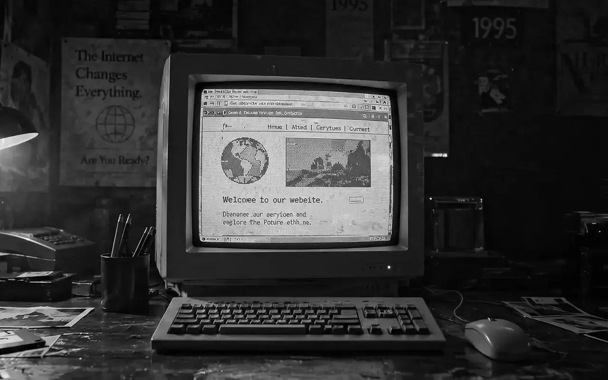
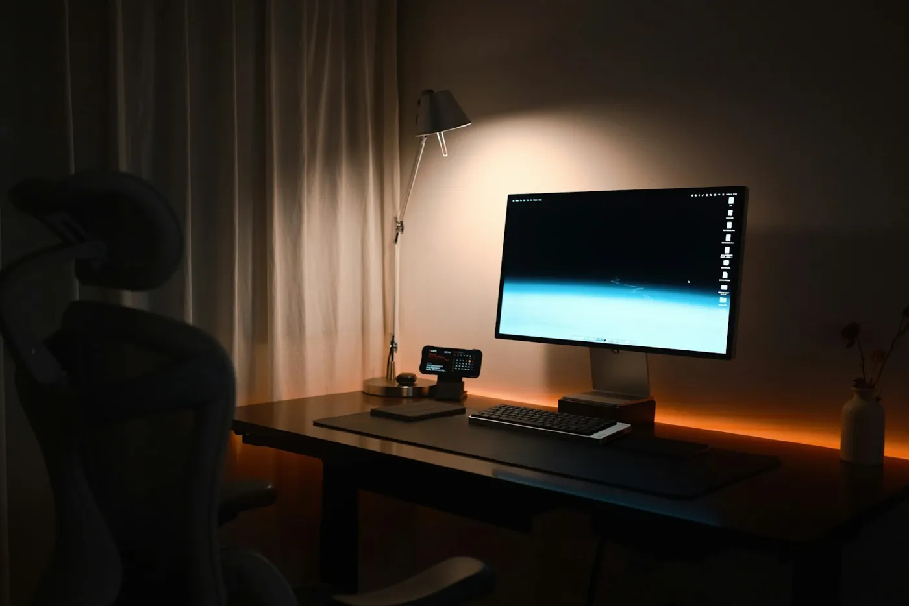

DL Consulting / Servizi
Diamo forma
al tuo prossimo passo.
Soluzioni digitali costruite intorno all’attività, alle persone e agli obiettivi.

Competenze
Tre aree.
Un’unica visione.
Trasformare la presenza digitale in qualcosa di utile alla tua attività: siti, comunicazione e ottimizzazione lavorano insieme.
Web experience
Siti pensati per convertire.
Un obiettivo chiaro, una struttura intuitiva e un’identità riconoscibile. Ogni pagina accompagna le persone verso l’azione giusta.
Esplora il servizioDigital presence
Una presenza più autorevole.
Sito, contenuti e canali devono raccontare la stessa attività. Partiamo da come vieni percepito oggi, per costruire una direzione più chiara.
Esplora il servizioAnalysis & optimization
Non sempre serve un nuovo sito.
A volte serve far funzionare davvero quello che hai. Individuiamo gli attriti che rendono più difficile capire, navigare e agire.
Esplora il servizio- Web Design
- UX / UI
- Cinematic Motion
- 3D Experiences
- AI Content
- Performance & Conversion
Come funziona
Raccontalo. Rifiniscilo.
Pubblicalo ovunque.
Un percorso chiaro, dal primo messaggio al sito online. Nessun gergo tecnico, nessuna sorpresa.
Raccontalo
Scrivi cosa vuoi cambiare, con parole semplici: più contatti, un’immagine più autorevole, un sito che finalmente funzioni. Partiamo da obiettivi e pubblico, non da un template.
Rifiniscilo
Vedi il prototipo prima dello sviluppo. Struttura, testi, colori e interazioni si decidono insieme, finché ogni elemento ha un perché.
Pubblicalo ovunque
Online su ogni dispositivo, con performance, SEO tecnica di base e punti di contatto collegati. Poi il progetto continua a crescere.
La differenza
Altri consegnano pagine.
Noi, sistemi.
Un sito vetrina è dove il lavoro comincia. Un progetto DL è dove inizia a lavorare per la tua attività.

Ti danno una pagina.
Online, ma ferma.

Livelli6
- Strategiatarget e obiettivi
- Messaggiochi sei, perché tu
- UX / UIpercorso chiaro
- Designidentità riconoscibile
- Performanceveloce su 4G
- Conversionecontatto, prenotazione, vendita
Tutto collegato
Ti diamo un sistema.
Chiaro, misurabile, pronto a crescere.
Il metodo
Capire. Costruire.
Continuare a crescere.
Sei fasi, un solo interlocutore. Sai sempre a che punto siamo e cosa succede dopo.
- 01
Analisi
Capire prima di costruire.
Ascoltiamo la tua attività, il pubblico e gli obiettivi. Individuiamo problemi prioritari e opportunità concrete.
- 02
Strategia
Ogni scelta ha un perché.
Definiamo target, posizionamento, messaggio e architettura dei contenuti. Costruiamo il percorso verso il contatto.
- 03
Prototipo
Prima lo vedi. Poi lo perfezioniamo.
Struttura, direzione visiva e interazioni prendono forma in una prima esperienza concreta.
- 04
Sviluppo
La visione diventa un sistema.
Interfaccia, contenuti e movimento lavorano insieme, con attenzione a responsive, performance e accessibilità.
- 05
Lancio
Online, con una base solida.
Controlliamo qualità, collegamenti e punti di conversione. Prepariamo la pubblicazione e gli strumenti di misurazione previsti.
- 06
Evoluzione
Il lancio è un nuovo inizio.
Osserviamo, miglioriamo e sviluppiamo nuove possibilità. Il progetto cresce insieme alla tua attività.
Il prossimo passo
La prossima idea
potrebbe essere la tua.
Raccontami cosa vuoi cambiare. Troviamo insieme il primo passo.
Oppure scrivi a dl.consulting.torino@gmail.com